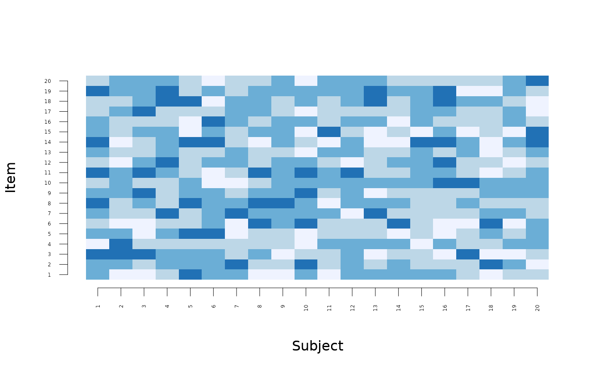
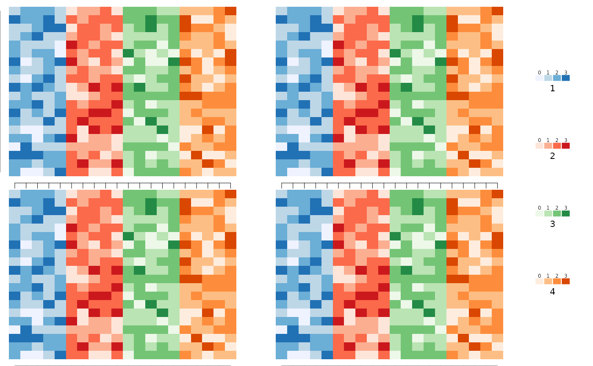
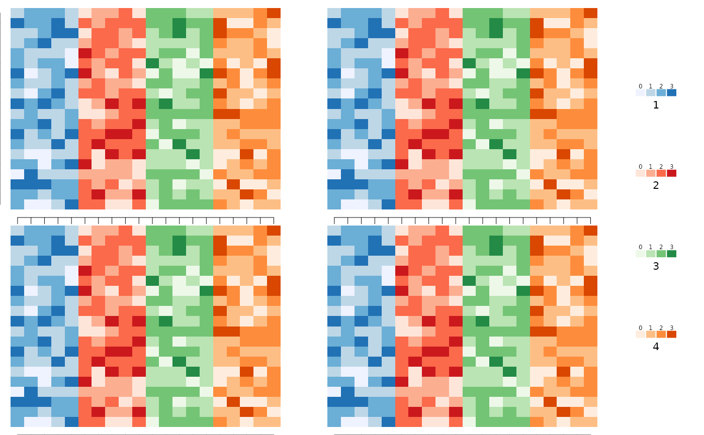

Visualize categorical by group variable
Usage
images(
x,
group,
ncol = 2,
byrow = TRUE,
colorbar = 1,
colorbar.space = 0.1,
label.offset = 0.02,
order = TRUE,
colorbar.border = 0,
main,
rowcol = FALSE,
plotfun = NULL,
axis1,
axis2,
mar,
col = list(c("#EFF3FF", "#BDD7E7", "#6BAED6", "#2171B5"), c("#FEE5D9", "#FCAE91",
"#FB6A4A", "#CB181D"), c("#EDF8E9", "#BAE4B3", "#74C476", "#238B45"), c("#FEEDDE",
"#FDBE85", "#FD8D3C", "#D94701")),
...
)Arguments
- x
data.frame or matrix
- group
group variable
- ncol
number of columns in layout
- byrow
organize by row if TRUE
- colorbar
Add color bar
- colorbar.space
Space around color bar
- label.offset
label offset
- order
order
- colorbar.border
Add border around color bar
- main
Main title
- rowcol
switch rows and columns
- plotfun
Alternative plot function (instead of 'image')
- axis1
Axis 1
- axis2
Axis 2
- mar
Margins
- col
Colours
- ...
Additional arguments to lower level graphics functions
Examples
X <- matrix(rbinom(400,3,0.5),20)
group <- rep(1:4,each=5)
images(X,colorbar=0,zlim=c(0,3))

images(X,group=group,zlim=c(0,3))
 if (FALSE) { # \dontrun{
images(X,group=group,col=list(RColorBrewer::brewer.pal(4,"Purples"),
RColorBrewer::brewer.pal(4,"Greys"),
RColorBrewer::brewer.pal(4,"YlGn"),
RColorBrewer::brewer.pal(4,"PuBuGn")),colorbar=2,zlim=c(0,3))
} # }
images(list(X,X,X,X),group=group,zlim=c(0,3))

images(list(X,X,X,X),ncol=1,group=group,zlim=c(0,3))
images(list(X,X),group,axis2=c(FALSE,FALSE),axis1=c(FALSE,FALSE),
mar=list(c(0,0,0,0),c(0,0,0,0)),yaxs="i",xaxs="i",zlim=c(0,3))
if (FALSE) { # \dontrun{
images(X,group=group,col=list(RColorBrewer::brewer.pal(4,"Purples"),
RColorBrewer::brewer.pal(4,"Greys"),
RColorBrewer::brewer.pal(4,"YlGn"),
RColorBrewer::brewer.pal(4,"PuBuGn")),colorbar=2,zlim=c(0,3))
} # }
images(list(X,X,X,X),group=group,zlim=c(0,3))

images(list(X,X,X,X),ncol=1,group=group,zlim=c(0,3))
images(list(X,X),group,axis2=c(FALSE,FALSE),axis1=c(FALSE,FALSE),
mar=list(c(0,0,0,0),c(0,0,0,0)),yaxs="i",xaxs="i",zlim=c(0,3))